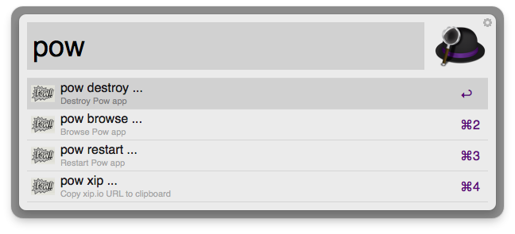
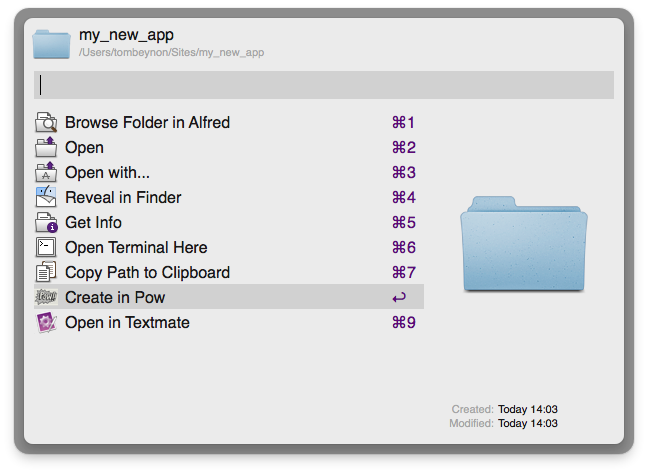

Pow for Alfred - Alfred V2 Workflow
Interact with Pow straight from Alfred. Currently only supports the actions I needed while writing it, but more will be added soon.
Follow me on Twitter (@Tom_Beynon) for updates.


Download the workflow
Download the workflow below and open in Alfred. It should work straight out the box if you have Pow installed.

If you haven't installed Pow yet, check out the Pow website for installation instructions.
Features
Currently only supports the actions I needed while writing it. The rest will be added soon, follow me on Twitter (@Tom_Beynon) for updates.
Create Pow app
Browse to a folder in Alfred and choose the 'Create Pow App' option
Open app in browser
pow browse [app]
Restart app
pow restart [app]
Destroy app
pow destroy [app]
Copy Xip.io URL
pow xip [app]
Credits
Heavily inspired by the brilliant Powify, a command line alternative for Pow
And of course, Pow!